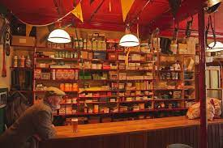
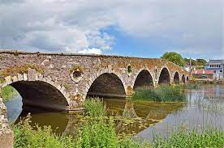
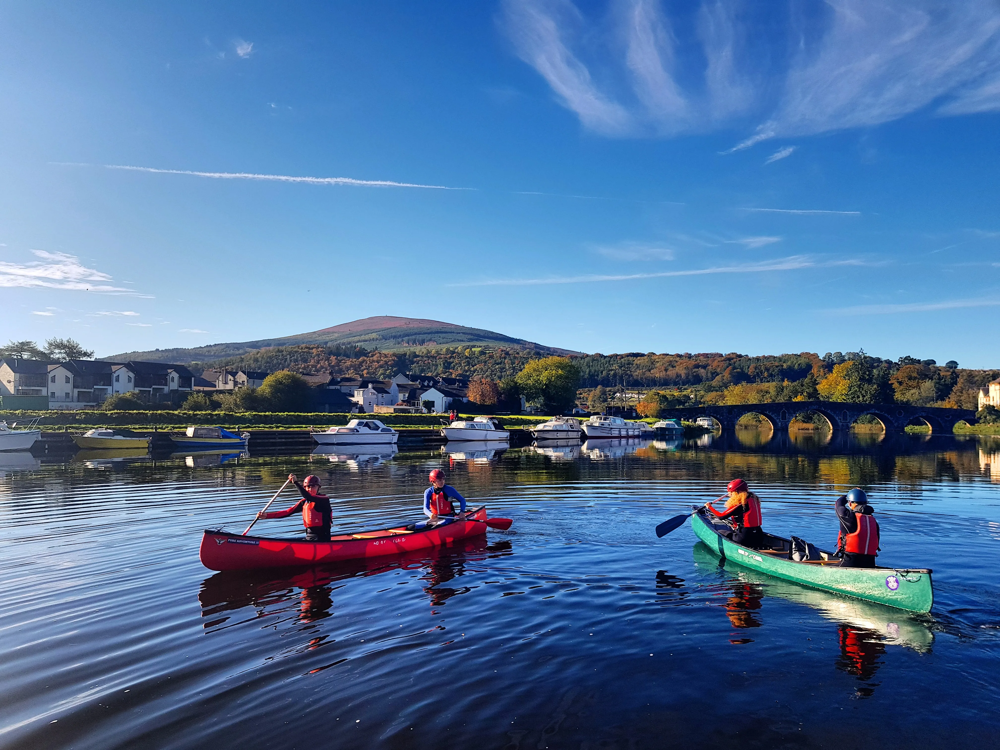
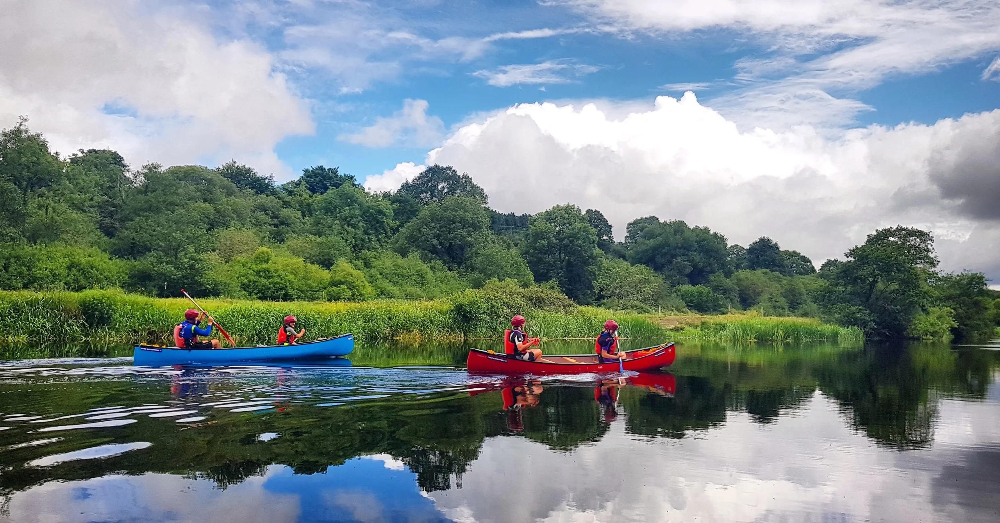
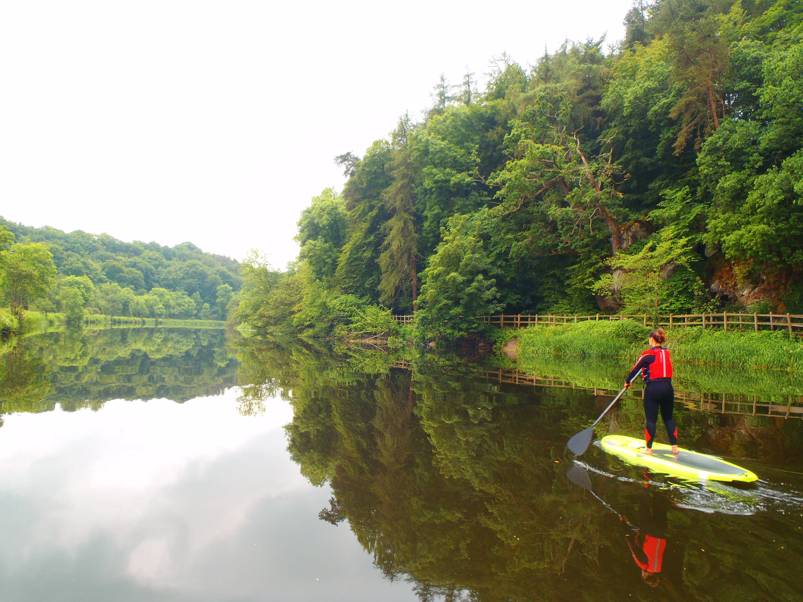
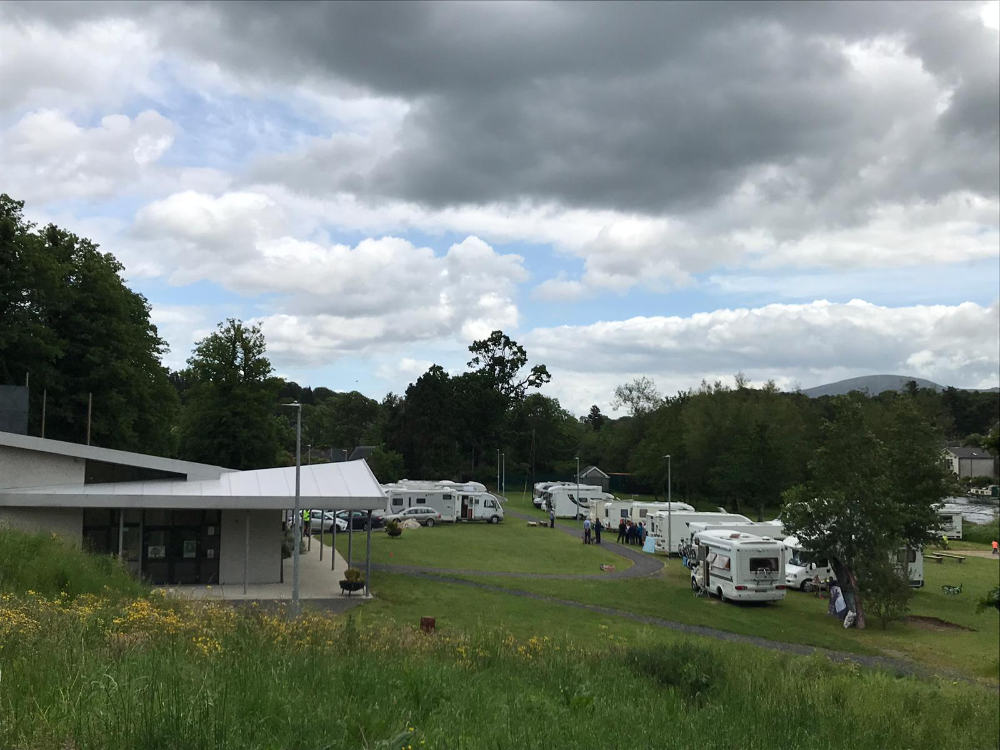
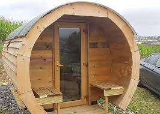
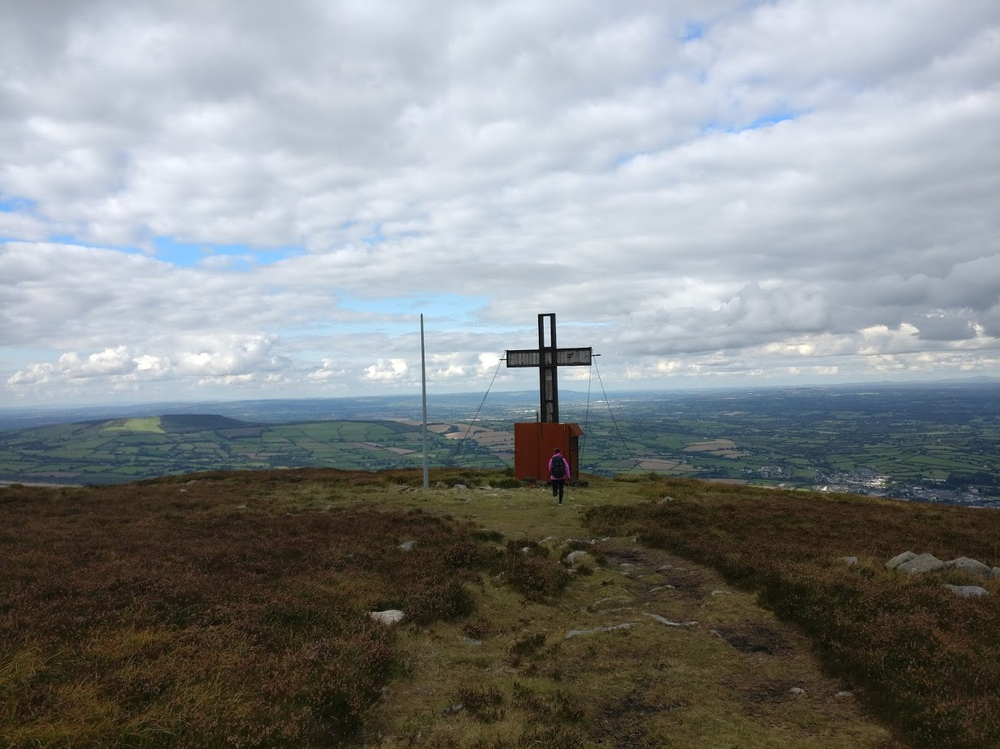

Where i grew up
About Graignamanagh:
Graignamanagh is a small town located 25 minutes away from Kilkenny city.
It Has a lot of history with Duiske Abbey and the bridge. Duiske Abbey was built in the early 13th century and was
destroyed by Queen Victoria in the 1700's. It would later be rebuilt. At its peak Duiske Abbey was the largest estate by far in Graignamanagh
The bridge in Graignamanagh was blown up in the 1798 Rebellion and was later rebuilt and has remained in tact ever since
Graignamanagh Has a lot of shops and ubs run by local people there is 6 pubs and 17 shops and services in total
- 


Activities:
My Top 3 Recommended Activities to do in Graignamanagh
1. Water activities. Many companies here in Graignamanagh offer water sport
activities such as Kayaking, Canoeing, SUP (Stand-up Paddle boarding) and Swimming.
These go down a big hit with both the tourists that come to Graignamanagh and the locals
  2. The Hub/ Glamping. Both the hub and Brandon Hill Glamping are great choices if you want to get away to
Graignamangh. The hub Offers 50 parking spaces for caravans with power and bins provided. it costs €12 per night without power
and €17 per night with power. It has boosted Graignamanagh's Economy significantly.
Brandon Hill Glamping Offers a lovely getaway up Brandon hill this is very popular with the tourists and the locals.
It is a 20 min walk into the town of Graignamanagh or a 5 minute drive. It is €90 per night for one of the Glamping Pods.
3. Hiking Brandon Hill. A great way to get fresh air is by hiking up brandon hill which takes 1 hour 30 minutes - 2 hours.
You can see the beauty of Graignamanagh and the surrounding towns.
A popular tourist stop is Freeney's Well which has the best water i've ever tasted. Its located about halfway up the Hill.
barrowvalleyactiviteshub.ie
brandonhillcamping.ie
Email: C00282842@setu.ie